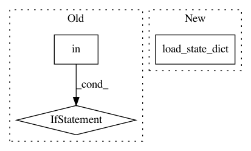

cc53003029d11839c394a9544a1394b62721869d,thinc/extra/wrappers.py,PyTorchWrapper,use_params,#PyTorchWrapper#Any#,207
Before Change
@contextlib.contextmanager
def use_params(self, params): // pragma: no cover
if self.id in params:
backup = self.to_bytes()
self.from_bytes(params[self.id])
else:
backup = None
yield
if backup is not None:
self.from_bytes(backup)
After Change
backup = {k: v.clone() for k, v in self._model.state_dict().items()}
self._model.load_state_dict(state_dict)
yield
self._model.load_state_dict(backup)
else:
yield
def _update_pytorch_averages(self, sgd, *, init_steps=1):
In pattern: SUPERPATTERN
Frequency: 3
Non-data size: 3
Instances
Project Name: explosion/thinc
Commit Name: cc53003029d11839c394a9544a1394b62721869d
Time: 2019-10-18
Author: honnibal+gh@gmail.com
File Name: thinc/extra/wrappers.py
Class Name: PyTorchWrapper
Method Name: use_params
Project Name: OpenMined/PySyft
Commit Name: 59d4bbaaf06850e2dfb357855f50b05f6c9aadb1
Time: 2020-10-02
Author: skywind29@users.noreply.github.com
File Name: syft/frameworks/torch/fl/utils.py
Class Name:
Method Name: add_model
Project Name: pytorch/pytorch
Commit Name: 249c21346208b682d128e28fe4480262f8b76cd8
Time: 2021-02-27
Author: benjamin.lefaudeux@gmail.com
File Name: torch/distributed/optim/zero_redundancy_optimizer.py
Class Name: ZeroRedundancyOptimizer
Method Name: load_state_dict